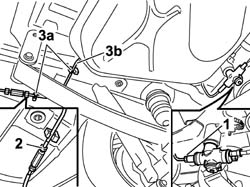

1042A48 cng recharge pipe from connection sleeve to solenoid - r r
- Path
- Procedures > 10 ENGINE > 1042 (METHANE) CNG CANISTER AND PIPES > 1042A methane gas cannister and tubes for re-charging > 1042A48 cng recharge pipe from connection sleeve to solenoid - r r
- Kind
- repair procedure (removal / refitting; the operation number is the code)
- Applies to
- all engines; all production periods; only with equipment: BIPOWER
- Interactive page
- https://sloeber94.github.io/elrnDB-fDbl/en/#/2584527
Applies to: all engines; all production periods; only with equipment: Cargo trim level and BIPOWER
 Removing
Removing
 Refitting
RefittingPlace the vehicle on a lift.
Drain the high pressure circuit as described in the specific operation 1042A02 C.N.G. - FUEL SYSTEM Safety check .
1. Drain the connector of the recharging pipe from the one-way valve on the solenoid.
2. Disconnect the connector of the recharging pipe on the connecting sleeve.
3. Release the pipe from the retaining clips (3a) and remove the pipe (3b).

Applies to: all engines; all production periods; only with equipment: Cargo trim level and BIPOWER
Refitting
RemovingCheck the condition of the recharging pipe.
Position the recharging pipe and secure it to the retaining clips.
If the fuel tank bolts had been loosened during dismantling, retighten them.
 | Fastening | Component | Ø | Value (daNm) |
|---|---|---|---|---|
- | Bolt | FUEL TANK | M8 | 2.8 |
Remove the hydraulic column jack.
Connect the connector of the recharging pipe on the connecting sleeve.
| Fastening | Component | Ø | Value (daNm) |
|---|---|---|---|---|
- | Connector | CNG REPRESSURIZING PIPE CONNECTORS | - | (on coupling hose) 2.5 |
Connect the connector of the recharging pipe on the one-way valve.
| Fastening | Component | Ø | Value (daNm) |
|---|---|---|---|---|
- | Connector | CNG REPRESSURIZING PIPE CONNECTORS | - | (on single-acting valve) 2.5 |
Manually set the CNG cut-off solenoids to the open position and check that the system is working.
Connect the Examiner diagnostic instrument in the 'Active Diagnosis' environment, and select and run 'Gas solenoids relay' to allow the solenoids to open and to restore the CNG system operating pressure; read the pressure value given by the sensor (located on the pressure reduction unit in the engine compartment) which should be greater than or equal to 11 bar, otherwise it will not be possible to switch from petrol to methane.
Remove the vehicle from the lift.
1042A06 C.N.G. - FUEL SYSTEM check for any leaks using electronic detector following operations .